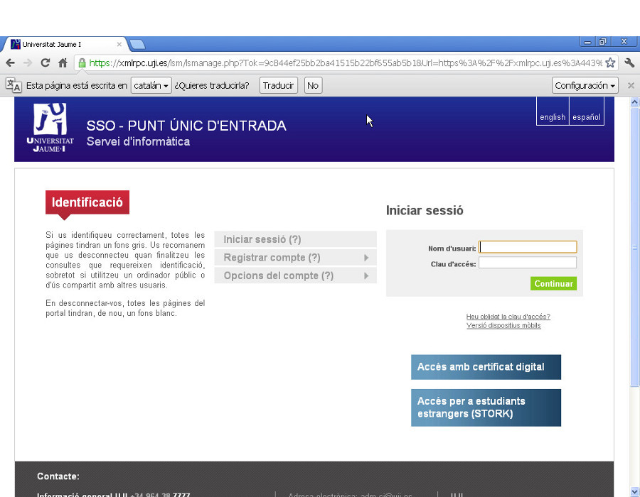
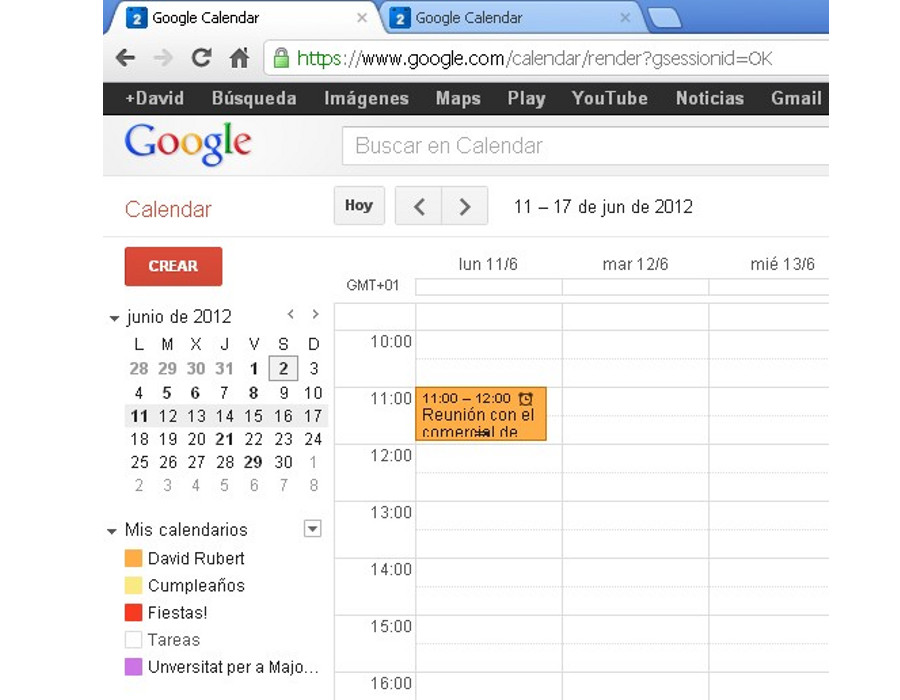
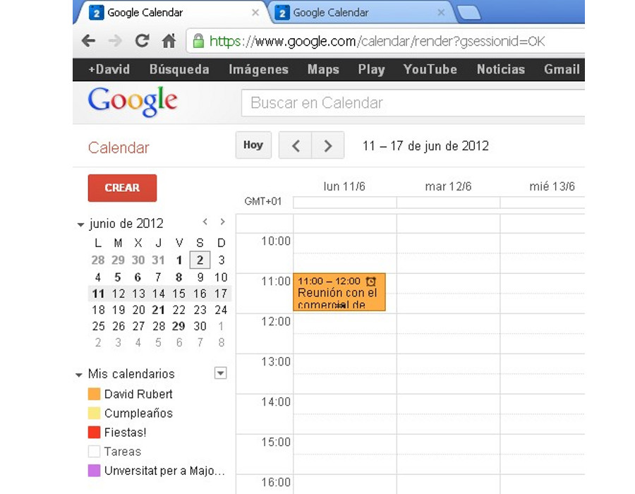
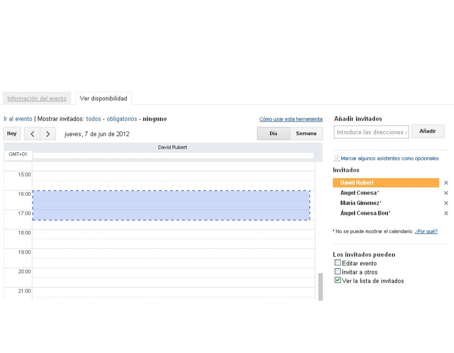
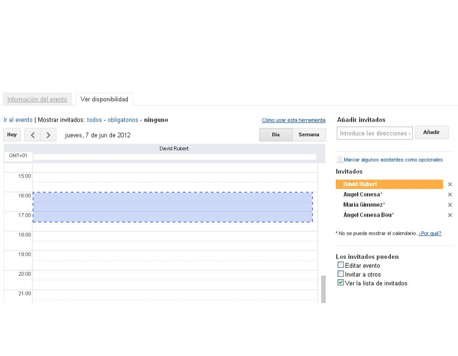
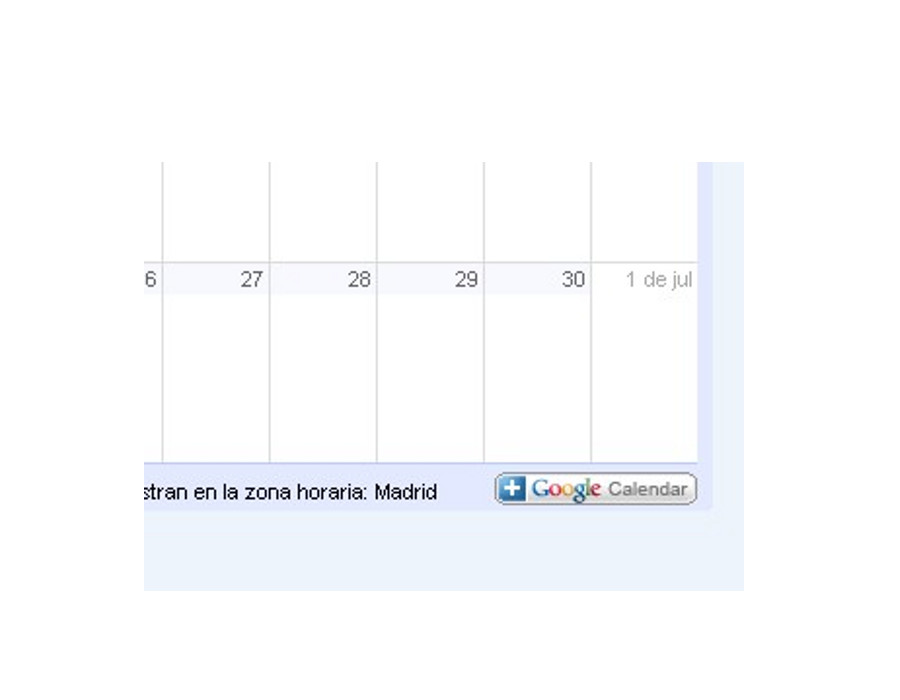
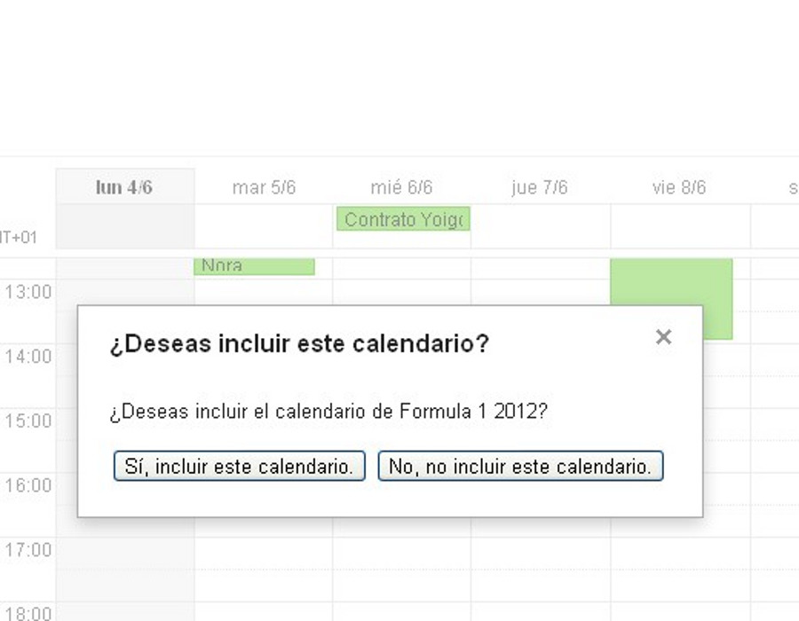
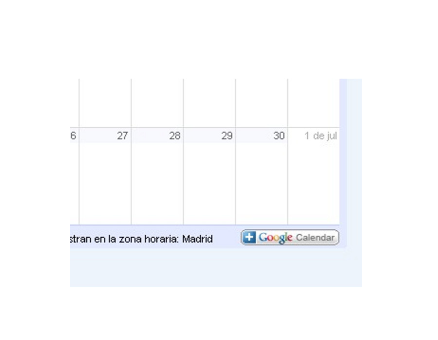
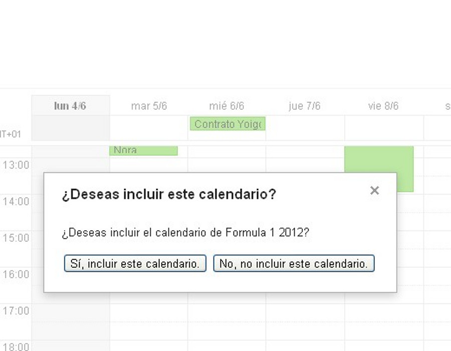

Gestión eficaz del tiempo en el trabajo
google
calendar
Organización efectiva de nuestras tareas
Apreta la tecla → para avanzar.

Google Calendar

Es la aplicación de calendario electrónico de Google, disponible desde el 2006 para los usuarios de GMail y desde el 2011 para los usuarios de la UJI. Características:
- Interfaz web.
- Almacenamiento en la nube.
- Compartición de calendarios.
- Sincronizado con dispositivos.
- Integrado con todas las aplicaciones de Google.
- Gestión de alertas con notificación vía SMS.
7 razones de Google para usar Calendar
- Comparte tu agenda. Permite que otras personas
de tu entorno puedan consultar, total o parcialmente, la agenda de
tus eventos.
- Accede a tu calendario donde quiera que vayas.
- No olvides más ningún evento. Los diferentes
métodos de recordatorio de Google Calendar nos alertarán de
cualquiera de nuestros eventos más importantes
7 razones de Google para usar Calendar
- Invitaciones. Realiza invitaciones a eventos,
haciendo seguimiento de las confirmaciones, de manera integrada con
el correo electrónico
- Sincroniza con aplicaciones de escritorio u otros
dispositivos.
- Trabaja sin conexión. Permite seguir
trabajando aunque se corte la conexión a internet.
- Gratis.
Acceso a Google Calendar

Podemos acceder al calendario, vía web, mediante un
navegador, accediendo directamente a su dirección URL o a través de los
enlaces situados en sus aplicaciones relacionadas:
- http://calendar.uji.es
- Desde el correo electrónico podemos acceder pulsando el enlace
ubicado en la barra superior de aplicaciones.
- Desde la página del portal de la UJI, primero deberemos acceder al correo
electrónico.


Cambia de foto con las teclas: ↑ y ↓
El navegador

IMPORTANTE: El navegador que utilicemos repercutirá en la
experiencia de usuario que obtengamos de la aplicación. La web de hoy
en día evoluciona día a día, y utilizar un navegador antiguo nos
limita el uso de todas las nuevas funcionalidades que van añadiendo.
- Chrome. OK.
- Firefox. OK.
- Internet explorer 8 o inferior. No recomendado.
Apreta la tecla → para avanzar.
Vistas de calendario
Representan la información del calendario en la
escala temporal que más nos interese. Por defecto se nos mostrará la
vista semanal. Veamos las más interesantes:
- Vista semanal. Información completa de eventos
sobre la semana en curso.
- Vista mensual Informacion completa sobre
eventos representada sobre una matriz de días de calendario del
mes en curso.
- Agenda. Representación de los próximos eventos
en orden, sin estructurar por días/semanas/meses.


Cambia de foto con las teclas: ↑ y ↓
El evento

Es la unidad mínima de información de un calendario.
Representa un acontecimiento que se producirá un día, a una hora, con
una determinada duración, y con una posible repetición.
Hay mucha información adicional y muchas propiedades
que podemos asociar a un evento, así que empecemos por definir el
evento más sencillo:
Reunión con el comercial de ONO el lunes 11 a las
11.00h
 

Cambia de foto con las teclas: ↑ y ↓
Otras propiedades de un evento

- Duración. ¿Cuánto dura el evento?
- Repetición. ¿Se repite siguiendo un patrón?
- Ubicación. ¿Donde se producirá el evento?
- Calendario al que pertenece. ¿En cuál de
nuestros calendarios lo clasificamos?
- Información de privacidad. ¿Queremos hacer el
evento público?
- Compartir evento con invitados. ¿Queremos
enviar invitaciones a este evento a otras personas?


 

Cambia de foto con las teclas: ↑ y ↓
Los calendarios

Podemos separar nuestros eventos en diferentes
calendarios. A parte de tener clasificada la información, nos permiten
dar diferentes niveles de privilegios a cada calendario. Vemos algunos
ejemplos:
- Calendario personal. Donde introducimos
nuestros eventos personales, no compartido, o sólo compartido con la familia.
- Calendario de trabajo. Con todos los eventos
de faena, incluidas vacaciones. Compartido con todos los compañeros
de trabajo sólo en modo ocupado/disponible.

Cambia de foto con las teclas: ↑ y ↓
Propiedades de un calendario
Tener calendarios separados para diferentes eventos
nos permite gestionar mejor nuestra información personal, y sobre todo,
gestionar mejor la compartición de eventos. Veamos cuáles son las
principales propiedades que identifican un calendario.
- Color.
- Visualización. Podemos ver sólo un calendario,
u ocultarlo de la representación
- Alertas.
- Compartición.

Apreta la tecla → para avanzar.
Otros calendarios
Calendarios que no tenemos en propiedad, pero sobre
los que queremos tener accesos en modo lectura (o lectura/escritura).
Veamos sus características:
- Formato standard iCalendar. Cualquier
calendario que cumpla este estándar puede ser añadido a nuestra
vista de calendarios.
- Calendarios compartidos. Cuando alguien nos
comparta un calendario lo visualizaremos aquí.
- Lectura/escritura. Depende de los permisos que
tengamos podremos sólo leer, o leer y escribir sobre el calendario.
 



Apreta la tecla → para avanzar.